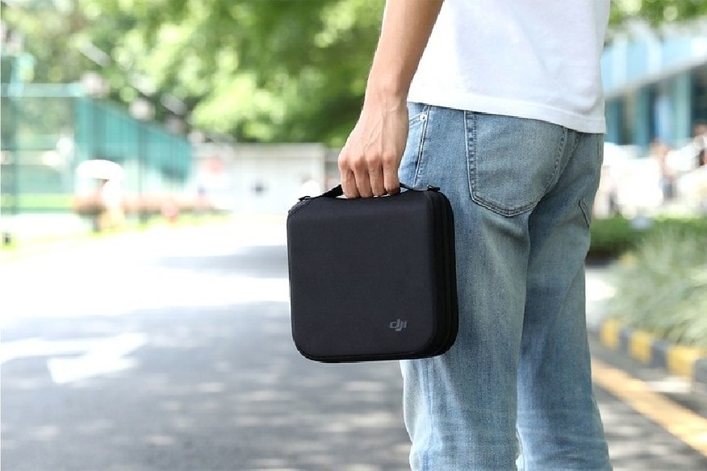

Welcome to Dronai
Dronai - ateities profesija? - Droneacademy.lt
2020.10.29 07:48+370 619 33 999 Pradžia Paslaugos Dronų mokykla Dronų remontas Dronų nuoma Dronų draudimas Foto ir video iš oro Dronų dalys Naujienos Dronų taisyklės Kontaktai 0 items +370 619 33 999
Dronai ateities profesija?
Tadas Aleksandravičius - 2019 4 birželio Pradžia / Naujienos / Dronai ateities profesija?Renkantis profesiją vis daugiau jaunų žmonių žiūri į ateities perspektyvas, juolab, supranta, kad aukštasis mokslas toli gražu nereiškia, kad pavyks rasti gerai apmokamą darbą. Ne veltui į pirmą planą “išlindo” technologijos, įvairūs kursai, galiausiai, savarankiškas žmogaus noras mokytis ir siekti kuo daugiau.
Viena iš tokių darbo alternatyvų, kuri prieš kelerius metus buvo mažai žinoma, o dėka įvairių mokyklų šiuo metu apdiskutuojama iš visų pusių – fotografavimas ir filmavimas dronais .
Ateitis, kuri yra šiandien
Su darbo rinkos pokyčiais dirbantys specialistai tikina, kad kiekvienas norintis pasyvių pajamų turėtų įvertinti tobulėjančias technologijas ir jeigu mokytis planuoja dabar – žiūrėti į darbo rinkos perspektyvas keliems metams į priekį, o ne tai, kas reikalinga šiuo metu. Pavyzdžiui, prieš gerus dešimt metų dronai skambėjo kaip mistinis žodis, kurį suprato vos keli žmonės. Šiuo metu bepiločiai orlaiviai linksniuojami labai dažnai, egzistuoja dronų mokyklos , reikia išlaikyti egzaminą, galiausiai, koks platus technikos pasirinkimas, taisyklių kismas bei daugelis kitų niuansų, kurie bepiločius orlaivius padaro visateisiais dangaus eismo dalyviais. Ta ateitis, kuri prieš kelerius metus atrodė blanki – šiuo metu atvira kaip niekada, kadangi dronai labai įvairūs, mokytis yra kur, o jų poreikis – auga kaip ant mielių.
Diagrama paimta iš statista.com
Ką veikia dronų valdytojai?
Fotografavimas ir filmavimas iš oro šiuo metu yra pati populiariausia drono panaudojimo funkcija. Nors daugelis imasi dirbti savarankiškai ir sau suteikia galimybę dirbti tada, kai tik nori ir tik su tokiais projektais, kurie jį domina, visgi, atsiranda vis daugiau įmonių, kurios samdo dronų pilotus. Pavyzdžiu, fotografai, taip pat marketingo bei vadybos įmonės, nekilnojamo turto bedrovės, kurioms fotografavimo ir filmavimo paslaugos iš oro reikalingos reguliariai. Žinoma, paklausos sulaukia tik patys geriausi ir tie, kurie turi teisę užsiimti šia veikla, tai yra, išlaikę egzaminus ir turi techniškai tvarkingą įrangą.Diagrama paimta iš phillybyair.com
Specialistas, o tik paskui geras dronas
Kadangi įranga labai dažnai prisideda prie gaunamo rezultato, daugelis pasiruošęs investuoti didelius pinigus, kad tik įsigytų puikiai manevruojantį bei didelį aukštį pasiekti galintį droną . Visgi, tai nėra svarbiausias niuansus, kurį vertina klientai ieškantis bepiločio orlaivio su valdytoju. Klientai paprasčiausiai nenusimano apie įrangos funkcionalumą, jiems nesvarbu kokio gamintojo techniką naudosite, jie tik nori gero rezultato. O geras rezultatas priklauso nuo drono valdytojo, tad labai svarbu nuolatos mokytis ir žinių semtis iš pačių geriausių specialistų.Savarankiškas mokymasis dažnai neatsiejamas nuo klaidų, kurių nepastebėjus sunku tinkamai išmokti naudotis įranga. O išmokus darbo rinka Jums bus atvira. Galiausiai, geras specialistas geba mokyti kitus, jam nesvetimas ir dronų remontas , tad bepiločiai orlaiviai – įranga, kuri padės Jums siekti karjeros aukštumų.
Kitos naujienos Žiūrėti visus
Dronų nuoma puikus būdas išbandyti bepilotį orlaivį
Jeigu prieš kelerius metus drono galimybes galėjo išbandyti tik didžiausi asai, šiuo metu bepiločius orlaivius namuose turi tikrai ne vienas Lietuvos gyventojas. Kodėl? Kadangi dronas pradėtas naudoti ne tik kaip pasilinksminimo įranga, kuri paded...
Tadas Aleksandravičius - 2019 25 birželioBepiločių orlaivių skraidymo taisyklės Lietuvoje
Kadangi šiais laikais bepiločiai orlaiviai naudojami ne tik profesionalų, tačiau ir mėgėjų, kurie išbando įrangos funkcionalumą pramogoms – svarbu kuo daugiau žinoti apie taisykles, kurios reglamentuoja drono veiklą. Nepamirškite, kad be...
Tadas Aleksandravičius - 2019 10 gegužėsDronų neskraidymo zonos
Bepiločiai orlaiviai – toli gražu ne tik pramoga. Vis daugiau kalbama apie augantį aviacijos sektorių, kuris gali daryti ir daro teigiamą įtaką šalies ekonomikai. Žinoma, kuo daugiau dronų naudojama – tuo griežčiau reglamentuojama skraidymo tv...
Tadas Aleksandravičius - 2019 15 birželio Pradžia Naujienos Dronų taisyklės Kontaktai Dronų mokykla Dronų remontas Dronų nuoma Dronų dalys Foto ir video iš oro Dronų draudimas info@droneacademy.lt +370 619 33 999 Islandijos g. 6, Vilniusprieš atvykstant susisiekti I - V 10 - 19 val. VI 10 - 14 val. VII Nedirbame Islandijos g. 6, Vilnius Visos teisės saugomos 2020 Drone Academy
Informuojame, kad šioje svetainėje naudojami slapukai (ang. cookies) siekiant gerinti Jūsų patirtį svetainėje bei tiesioginės rinkodaros tikslais. Savo duotą sutikimą bet kada galite atšaukti ištrindami įrašytus slapukus. Daugiau apie privatumo politiką Sutinku
